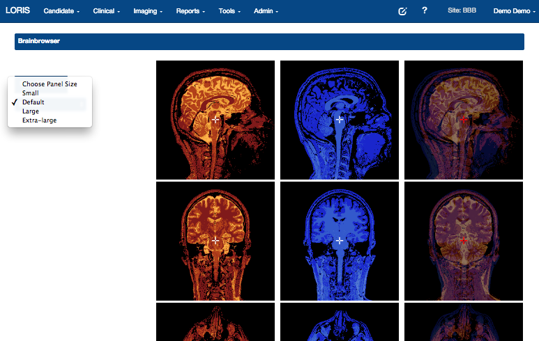

THE MNI Ecosystem
McGill Centre for Integrative Neuroscience
|
ENTER DATE |

|

|

|

|

THE MNI ECOSYSTEM

What’s involved?
Longitudinal acquisition, storage and curation,
Transfer, Anonymization, Security, Privacy, Ethics
Reproducbility, Interoperability, APIs,
Validation, Quality control, Protocol checking
Preprocessing, Analysis, HPC
Provenance, Ontological standarization, data harmonization
Upgrades, Maintenance, Bug fixes
User Interface, Javascript, Bootstrap
Tracking, Extensibility
Data management, Summary statistics,
Workflows, Development, Tool integration
Data sharing, download, multi-modal linking, querying
Image processing, Visualization,
Networking, System Administration
Partnerships, Funding and HR
...No big deal!
Data flow

WHAT IS LORIS?

“LORIS is a modular and extensible web-based data management system that integrates all aspects of a multi-center study: from heterogeneous data acquisition (imaging, clinical, behavior, genetics) to storage, processing and ultimately dissemination.” |

|
What does LORIS do?

What does LORIS actually do?
LORIS - Key features

LORIS Dashboard

Extensible and modular design


|


|
LORIS globally

|

|
|


|

|
|

Quebec Parkinson Network


|
|
Genomics Module

WHAT IS CBRAIN?
|
“CBRAIN is web-based software that allows neuroimaging researchers to perform computationally intensive analyses on data by connecting them to High-Performance Computing (HPC) facilities across Canada and around the world.” “CBRAIN connects researchers to the tools and processing power required to handle the large neuroimaging datasets that have become the norm in the field.” |

|
CBRAIN SCHEMA


CBRAIN Computing Resources

CBRAIN portal

CIVET

NIAK


|

|

|
BigBrain - high resolution reference brain
Multimodal integration into an anatomically realistic standard space
Years of development
20 micron resolution
7404 histological slices
1 Terabyte dataset
Available freely at https://bigbrain.loris.ca
Data Sharing
Data Sharing Issues
| Benefits | Hurdles |
|---|---|
| More citations | Fear |
| Reduces waste/duplication | Technical challenges |
| Increased exposure | Privacy concerns |
| Access to larger datasets | Data Harmonization |
| Access to rare data | Interoperability |
| Less attrition | Reproducibility |
| Increased validation | Obtaining ethics |
| Saving Tax $$/more funding | Public dataset not identical |
Global Data Sharing Initiatives

Interoperability

Collaboration with global data sharing groups
INCF, Open Science Framework, NITRC, Allen Institute, NDAR, HAWG (Atlas Building Group), Organization Human Brain Mapping, Human Brain Project, Compute Canada, Maelstrom, Edinburgh BRAINS ImageBank, COINS, XNAT, VIP, BrainCode, BIDS, NIDM, NeuroDevNet, GUSTO, QPN, Boutiques, VIP

|
Important value of hackathons to data sharing initiatives 
|
Hackathon Accomplishments
- Automated PET recognition module
- Enhanced DICOM anonymization - making use of PYDICOM
- Installed one and half instances of LORIS
- Built bridges between the various development groups
- I got smarter
Automated PET recognition

Automated PET recognition

Enhanced DICOM anonymization
- Going dcmtk free -- PYDICOM
- CONDA
- Satra knows everything!!
Enhanced DICOM anonymization

Open Science

|

|
Open Science

Cyberinfrastructure

Open Science Functionality
| Acquisition & Storage | Dissemination & Analysis |
|---|---|
| Organized/Accessible data | Centralized repository |
| Long term storage | Provenance Capture |
| Quality Control mechanisms | API for interoperability |
| Web visualization | Consent is factored in |
| Tablet/Mobile Friendly | User account access control |
| Anonymized automatically | Completely de-identified |
| Cross-modal linking | Cross-study correlation |
| Online Data Querying | Access to high performance computing |
LORIS Biobank instance

LORIS Imaging instance

Benefits of Open Science
| Organized/Accessible data | Greater exposure |
| More collaborations | Data validation |
| Access to Quality Control results | Access to larger datasets |
| More citations | Greater funding |
| Cross-modal linking | Cross-study correlation |
| More robust findings | Greater reproducibility |
Healthy Brains for Healthy Lives - Infrastructure

Actual Science

National Network

|

|
Including "Data Publishing"

Future Direction
- Phase 2 LORIS/CBRAIN connectivity
- Enhanced API
- Additional modalities (eg. MEG/EEG)
- Institutional requirements
- Enhanced visualization
- Numerous new modules
- Biobanking Tracking

Acknowledgments
Alan Evans, Alex Zijdenbos, Reza Adalat, Penelope Kostopoulos, Louis Collins, Vladimir Fonov, Marc Rousseau, Tarek Sherif, Pierre Rioux, Nic Kassis, Leigh MacIntyre, Claude Lepage, Ilana Leppert, Carolina Makowski, Natasha Beck, Tristan Glatard, Bert Vincent, Lindsay Lewis, Alden Woodward, Sylvain Milot, Jean Francois Malouin
LORIS Developers: Dario Vins, Jonathan Harlap, Matt Charlet, Andrew Corderey, Sebastien Muehlboeck, David Brownlee, Zia Mohades, David MacFarlane, Cecile Madjar, Mia Petkova, Christine Rogers, Rathi Gnanasekeran, Justin Kat, Nicolas Brossard, Tara Campbell, Jordan Stirling, Mouna Safi-Harab, Greg Luneau, Rida Abou-Haidar, Daniel Kroetz, Pierre-Emmaunel, Tom Beaudry, Shen Wang, John Saigle, Santiago Paiva, Xavier Lecours-Boucher, Stella Lee, Najmeh Khalili-Mahani, Sruthy Mathew, Zain Virani, Meaghan Evans, Liza Levitis, Angie Mosquera, Samira Haikel, Henri Rabalais & Zaliqa Rosli

|
Thank you!Acknowledgements: Alan Evans, Alex Zijdenbos, Dario Vins, Jonathan Harlap, Matt Charlet, Andrew Corderey, Sebastian Muehlboeck, Reza Adalat, Louis Collins, Vladimir Fonov, Marc Rousseau, Mia Petkova, Rathi Gnanasekaran, David Brownlee, Tarek Sherif, Pierre Rioux, Nic Kassis, Leigh MacIntyre, Claude Lepage, Ilana Leppert, Natasha Beck, Tristan Glatard, Bert Vincent, Lindsay Lewis, Najma Mahani, Elodie Portales-Casamar, Alden Woodward, Sylvain Milot, Jean Francois Malouin, Sylvain Baillet, Daniel Kroetz, Martin Weiss, Mathieu Desrosier, Jason Karamchandani, Amit Bar-Or, Ted Fon, John Brietner, Derek Lo, Patrick Bermudez, Chris Steele, Pamela Patterson and one of my favourites: Pierre Bellec! LORIS team on left |